速览
这是「杂谈」分类：如字面意思随便聊聊，但几乎都和游戏有关，放轻松听就好。本集谈玩家环境：无论把游戏的响应做得多好，也会被无可奈何的事毁掉——那就是画面显示延迟。用液晶电视本身就一定有延迟。《大乱斗 特别版》在 E3 2018 发表时，樱井在任天堂美国主办的 Treehouse 现场活动中试玩，一摸发现延迟非常大，操作感大打折扣，立刻指出并改好了。明明有好几个布展人员摸过，延迟却被忽视——这说明对很多人来说延迟很难察觉。我们看的其实是主机过去生成的影像，时差大就会严重损害体验。给不敏感的人几点建议：先选按下就立刻反应的游戏（3D 游戏不适合，NSO 上的 FC 游戏、《星之卡比》就不错），按跳跃试试；如果觉得慢，在电视设置里切到低延迟模式/游戏模式。没有该功能的电视，打游戏的话建议找带低延迟模式或本身延迟少的；樱井买电视每次都会检查。经过各种设备中转时，尽量省掉也可能有效。也有只有声音延迟的情况（如家庭影院），可换模拟连接或查低延迟设置，器材相性只能慢慢试。延迟有显示延迟和响应时间两个概念：响应时间（像素改变发光的速度）现在明显慢的不多；麻烦的是显示延迟——一般电视为高画质做了各种后处理，游戏模式/低延迟模式就是绕过它们、重视响应；若没有这些模式，把「画质增强」类模式一个个关掉也可能改善。规格里写的显示毫秒数当然越小越好：60fps 时 1 帧约 16.67ms。
1. 杂谈分类开篇 0:00
这个分类如字面意思是随便聊聊，但几乎都和游戏有关，放轻松听就好。本集谈的是玩家环境。
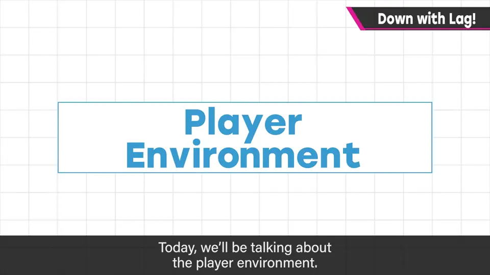
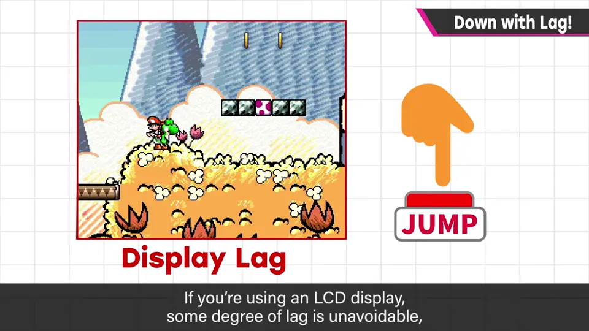
2. E3 2018 的现场试玩 0:37
《大乱斗 特别版》在 E3 2018 发表时，樱井参加了任天堂美国主导的 Treehouse 现场活动并实机试玩，结果一摸发现延迟相当大，操作感大打折扣，立刻指出并修好了。
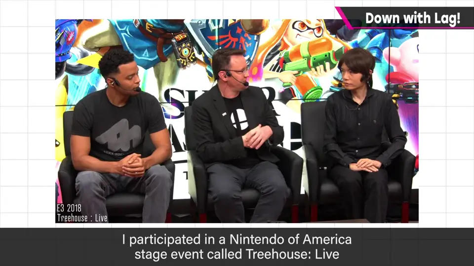
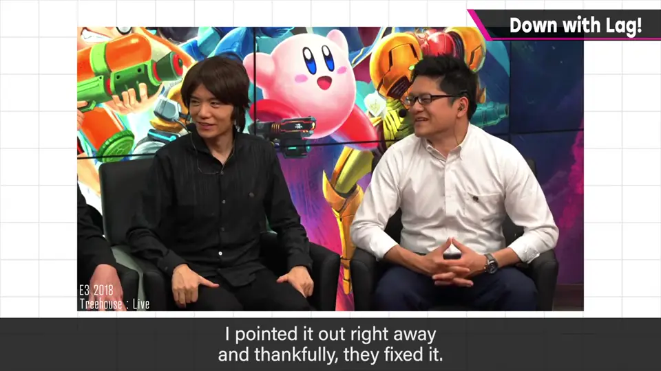
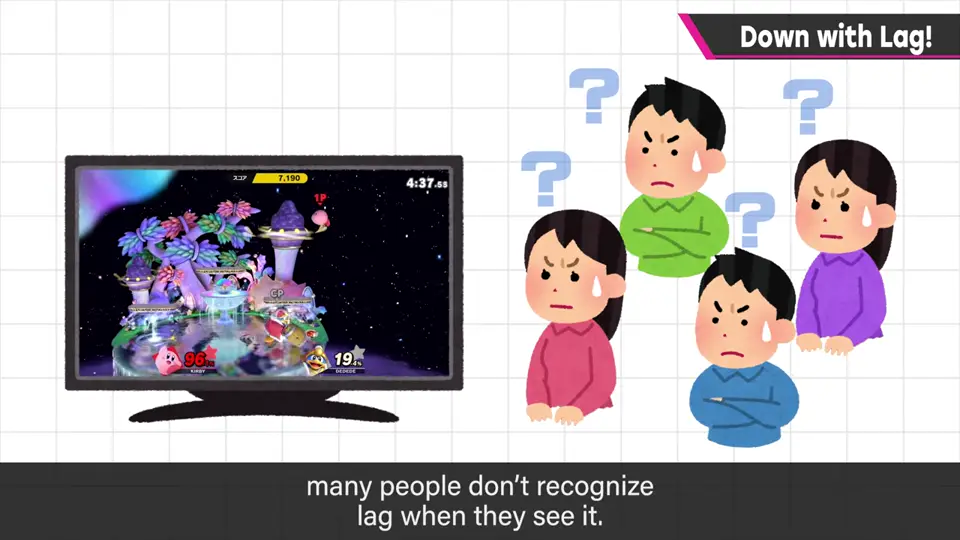
我们看的是主机过去生成的影像，时差大就会严重损害游戏体验，所以想尽量改善。
3. 检查方法 1:52
- 选一款按下按钮就立刻反应的游戏；3D 游戏不适合，Nintendo Switch Online 的 FC 游戏或《星之卡比》就不错。
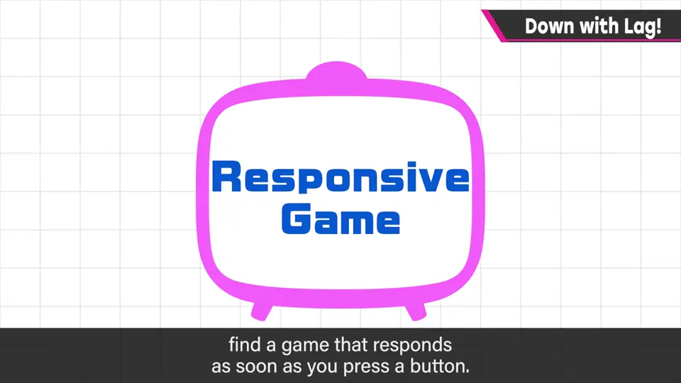
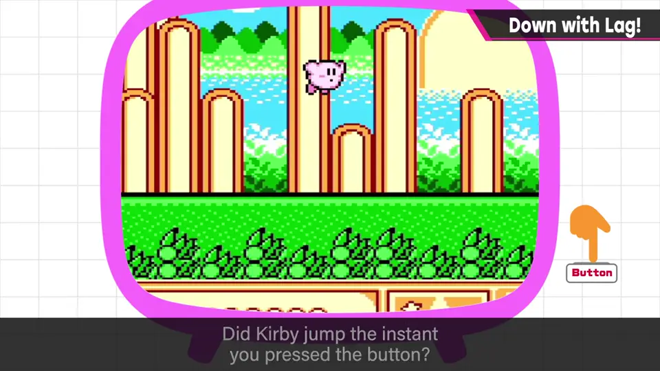
- 按跳跃键试试。
- 觉得慢，就在电视画面设置里切到低延迟模式或游戏模式。
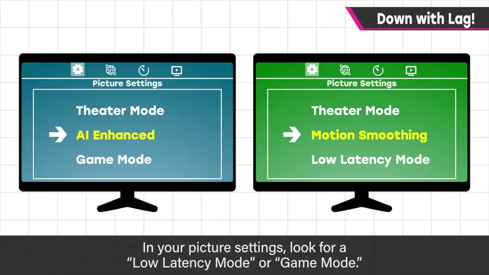
4. 选电视与周边设备 2:38
有的电视没有这些功能。要打游戏，建议找带低延迟模式或本身延迟少的电视——樱井每次买电视都会检查。
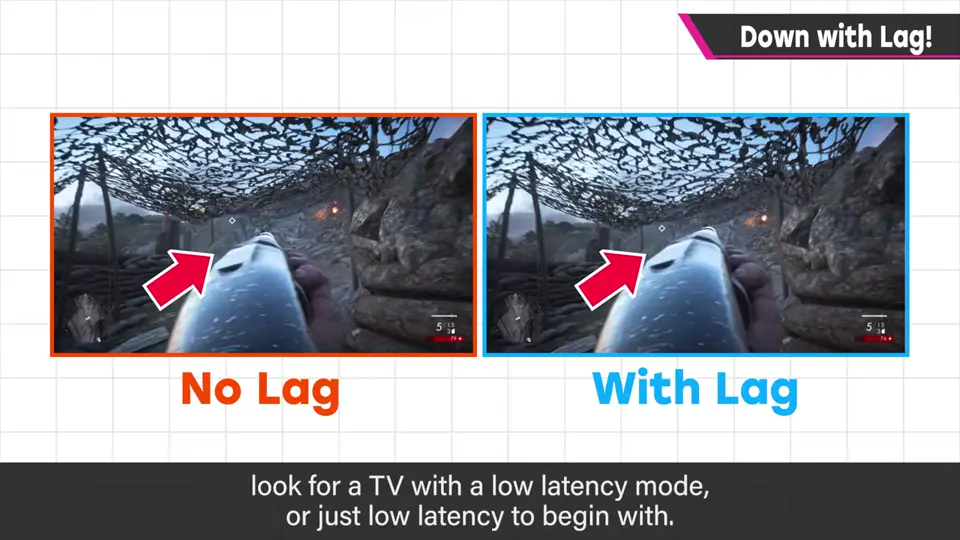
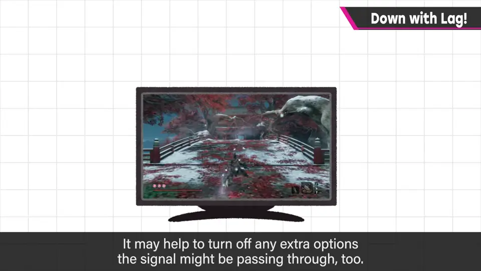
信号经过各种设备中转时，尽量省掉中间设备也可能有效。
也可能只有声音延迟：例如用家庭影院时打击声听起来慢半拍。可以试模拟音频连接、查低延迟设置；器材相性问题只能踏实地去试。
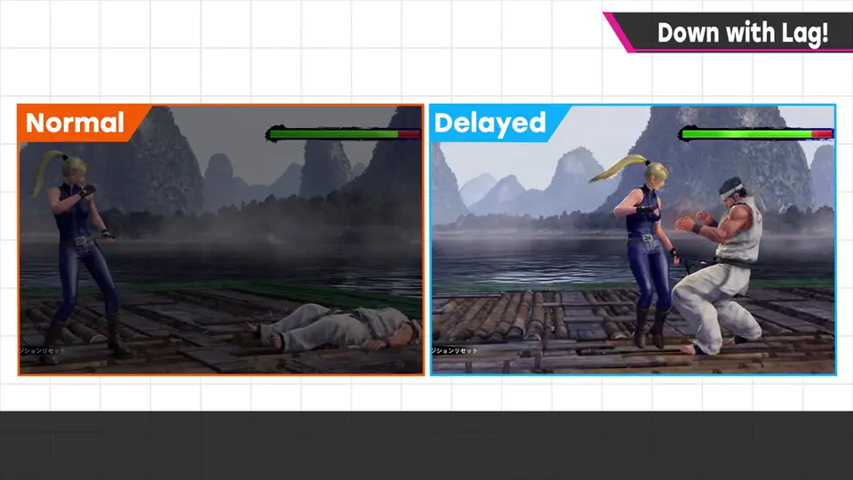
5. 显示延迟与响应时间 3:37
| 概念 | 含义 | 现状 |
|---|---|---|
| 响应时间 | 液晶像素改变发光的速度 | 明显慢的已不多 |
| 显示延迟 | 电视为高画质做后处理花的时间 | 主要麻烦所在 |
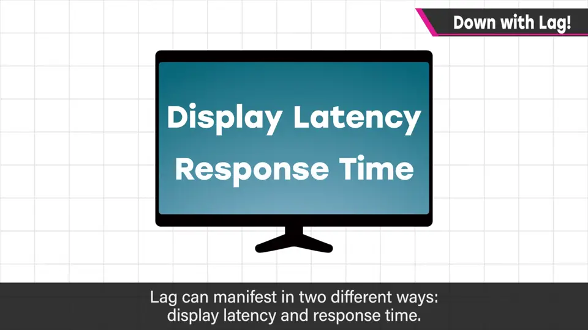
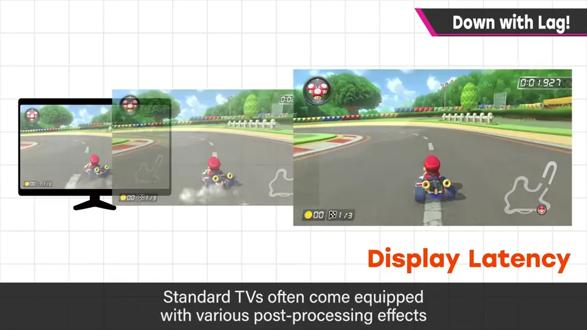
一般电视为了更高品质、更鲜明的显示，会对影像做各种后处理。游戏模式/低延迟模式就是尽量绕过它们、重视响应。
6. 用数字看延迟 4:36
规格表上有时会写显示需要多少毫秒，当然越少越推荐。
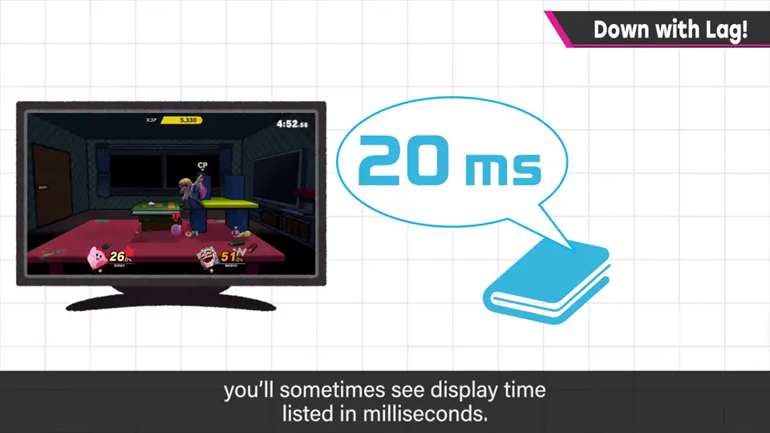
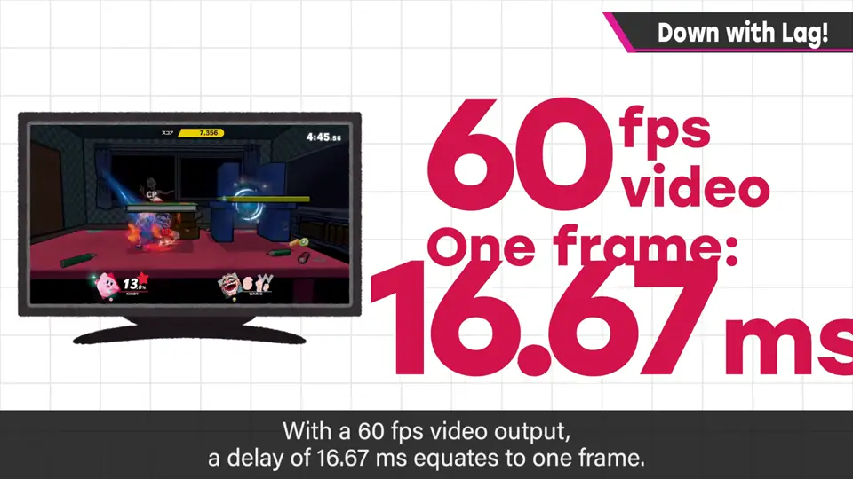
请一定要注意延迟，游戏的舒适度会完全不同。
自测题
1. E3 2018 现场试玩的事说明了什么？
多名布展人员摸过仍没发现严重延迟，说明多数人很难察觉延迟。 1:10
2. 如何简单检查自家电视的延迟？
用按下即反应的 2D 游戏（如 NSO 的 FC 游戏）按跳跃，感觉慢就切游戏模式/低延迟模式。 2:10
3. 显示延迟主要来自哪里？60fps 时一帧多少毫秒？
电视为画质做的后处理；约 16.67ms。 4:05